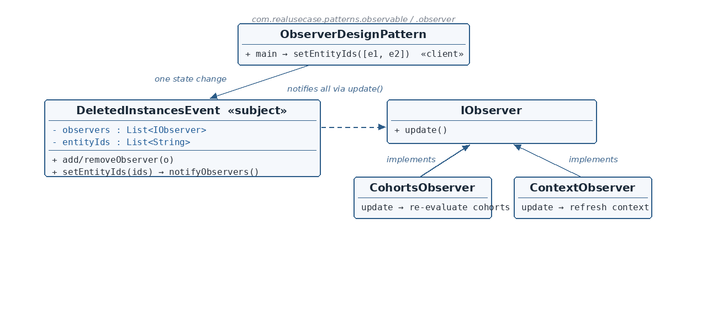

The contracts
☕ 4 min read · 🎬 Video walkthrough · 📊 UML diagram · 💻 Runnable code
⚡ In a nutshell — Define a one-to-many dependency between objects: when the subject's state changes, all registered observers are notified automatically.
Define a one-to-many dependency between objects: when the subject's state changes, all registered observers are notified automatically. The subject knows its observers only through a common interface — it neither knows nor cares what each one does.
When entity instances are deleted in a data platform, several independent subsystems must react: cohort memberships must be re-evaluated, cached contexts must be refreshed. Hardwiring the deletion service to call each subsystem couples it to all of them — and every new reactor means editing the deletion flow. The production fix is an event: the deletion service publishes a DeletedInstancesEvent; interested subsystems subscribe; one setEntityIds(...) fans out to every subscriber automatically. New reactors subscribe without touching the publisher.
IObserver is the observer contract — one update() method.IObservable is the subject contract — addObserver / removeObserver / notifyObservers.DeletedInstancesEvent is the concrete subject: it keeps a List<IObserver> and its state (entityIds). The key move: setEntityIds calls notifyObservers() itself — state change and notification are one atomic act; publishers can't forget to notify.CohortsObserver / ContextObserver are concrete observers: each registers itself with the event in its constructor and, on update(), pulls the changed state back from the subject (the pull model).
Reading the diagram: the client changes the subject's state once; the subject notifies every registered IObserver (dashed arrow). The subject's list is typed to the interface — it never knows the concrete observer classes.
IObservable — Subject contract — subscribe/unsubscribe/notify.DeletedInstancesEvent — Concrete subject — holds observers + the deleted-ids state.IObserver — Observer contract — update().CohortsObserver / ContextObserver — Concrete observers — independent reactions to the same event.ObserverDesignPattern — Client — wires observers, triggers one state change.public interface IObserver {
void update();
}
public interface IObservable {
void addObserver(IObserver observer);
void removeObserver(IObserver observer);
void notifyObservers();
}
DeletedInstancesEvent.java — the concrete subjectpublic class DeletedInstancesEvent implements IObservable {
private final List<IObserver> observers = new ArrayList<>();
private List<String> entityIds;
@Override public void addObserver(IObserver observer) { observers.add(observer); }
@Override public void removeObserver(IObserver observer) { observers.remove(observer); }
@Override
public void notifyObservers() {
for (IObserver observer : observers) {
observer.update();
}
}
public void setEntityIds(List<String> entityIds) {
this.entityIds = entityIds;
notifyObservers();
}
public List<String> getEntityIds() { return entityIds; }
}
List<IObserver> — the subject can broadcast to anything implementing the interface, with zero knowledge of concrete classes (verify: no instanceof, no concrete imports).setEntityIds couples state change to notification — the moment the deleted ids are set, every observer's update() runs. Publishers cannot "forget to notify."getEntityIds exists for the pull model: observers come back to read what changed.CohortsObserver.java — a concrete observerpublic class CohortsObserver implements IObserver {
private final DeletedInstancesEvent event;
public CohortsObserver(DeletedInstancesEvent event) {
this.event = event;
event.addObserver(this);
}
@Override
public void update() {
System.out.println("cohorts re-evaluated for deleted: " + event.getEntityIds());
}
}
update() pulls event.getEntityIds() and reacts. ContextObserver is identical in shape with its own reaction — the two subsystems never know about each other.ObserverDesignPattern.java — the clientDeletedInstancesEvent event = new DeletedInstancesEvent();
new CohortsObserver(event);
new ContextObserver(event);
event.setEntityIds(Arrays.asList("e1", "e2"));
notifyObservers() inside the setter? Notification is part of what a state change means. Leaving it to callers invites the forgot-to-notify bug.update() carries no payload — observers pull what they need from the subject. This keeps the interface stable when the state grows (add a field; update() never changes).$ java -cp target/classes com.realusecase.patterns.ObserverDesignPattern
cohorts re-evaluated for deleted: [e1, e2]
context re-evaluated for deleted: [e1, e2]
ApplicationEvent / @EventListener; GUI event listeners everywhere.One change, many reactions — and the publisher never knows who's listening.
👏 Found this useful? Give it a few claps so more developers discover it, and follow for the whole series — every article ships with a UML diagram, runnable code, a narrated video, and a companion PDF. Happy building! 🚀